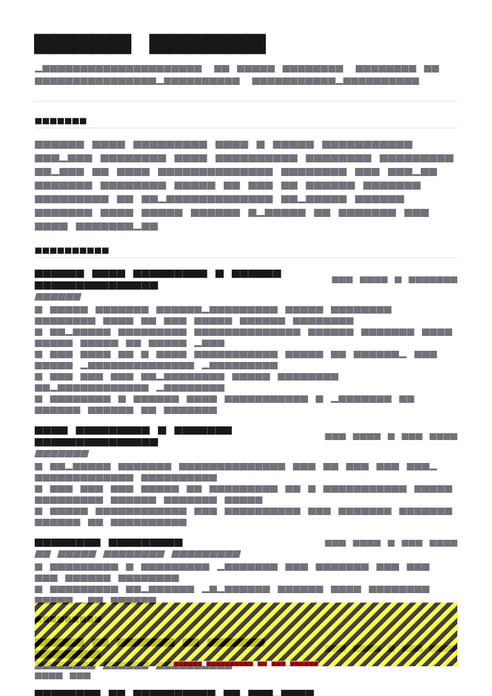

What a cover letter is actually for
A cover letter that summarises your resume has no reason to exist. Its value is in what a resume structurally cannot say.
Your resume is a data document: standardised, scannable, comparable. That is its strength and its limit. It cannot say why you are writing to this employer, and it cannot explain anything unusual about your application — a change of direction, a gap, a relocation, a deliberate step down in title.
So a good letter does three things: it names something specific about this employer, connects one piece of your experience to their actual problem, and resolves whatever question your resume leaves open. Everything else is padding.
Could a reader get this from my resume? If yes, cut it. Could this paragraph be sent to any other employer with the name swapped? If yes, rewrite it.
The four-paragraph structure
- Opening (2–3 sentences). The role, and one concrete reason you are writing to this employer. Not “I am writing to apply for the position advertised on your website”.
- Evidence (3–4 sentences). One piece of your experience that maps to their most important requirement, with a number. One, not five.
- Fit or explanation (2–4 sentences). Either why this company and role specifically, or the context your resume raises — the pivot, the gap, the move.
- Close (1–2 sentences). Availability and a straightforward statement of interest. No pleading.
That is 200 to 350 words. The hardest discipline is choosing one piece of evidence in paragraph two — the instinct to list three is what makes most letters read like a resume in prose.
Length, format and sending
- One page, 200–350 words, three or four paragraphs.
- Address a named person if you can find one; otherwise “Dear Hiring Manager”.
- Match the resume’s typeface and header so the two read as a set.
- Same file rules as a resume: text-based PDF, named
Firstname-Lastname-Cover-Letter.pdf. - If the form has a text box, paste plain text and check the line breaks survived. If you are emailing, put the letter in the body and attach only the resume.
1. Standard application
Dear Ms. Okafor,
I am applying for the Operations Manager role at Halden Logistics. Your posting emphasises reducing pick error rates across a multi-shift site, which is the specific problem I spent the last 18 months on.
At Broadmoor Distribution I run a 60-person warehouse handling 14,000 outbound units a day. I redesigned the zone layout and retrained the full shift roster, cutting pick error rate 31% while holding throughput flat. The work was mostly unglamorous — observation, error-code analysis, and a lot of conversations with pickers about why the old layout made mistakes easy.
I am interested in Halden specifically because you are consolidating three sites into two next year. I have been through one consolidation and would rather be useful during the next one than arrive after it.
I am available at four weeks’ notice and would welcome the chance to talk.
Paragraph two does one achievement, one number, and a sentence about how — that last part is what makes it credible rather than boastful.
2. No experience / first job
Dear Hiring Manager,
I am applying for the Junior Data Analyst position at Thameside Retail. I noticed the role sits inside the merchandising team rather than a central data function, which is unusual and is exactly the setup I want to learn in.
I graduated this summer with a BSc in Statistics and spent my final year building a punctuality analysis of 180 bus routes from an open transit API — 4.2 million records, 11% of them missing, and a recommendation at the end about which three corridors to prioritise. Cleaning that data taught me more than the modelling did.
I have no commercial experience, so I will be straightforward: what I bring is SQL and Python that I have used on messy real data, and a habit of writing down what I concluded rather than stopping at the chart.
I can start immediately and would be glad to walk through the project if useful.
Naming the lack of experience plainly, then stating what you do have, beats hoping nobody notices. See entry level resume for the accompanying document.
3. Career change
Dear Mr. Reyes,
I am applying for the Data Analyst role at Northgate Foods. I am currently an operations manager, and I want to be clear at the outset that this is a deliberate move rather than a sideways drift.
For the last 18 months I have been doing analyst work inside my operations job: I built the SQL and Power BI reporting that three site managers now use for shift planning, and my analysis of two years of pick-error data identified four recurring causes, which led to a layout change that cut errors 31%. I completed the Google Data Analytics certificate alongside that.
What I would bring that a career analyst would not is the operational context. I have owned the processes the data describes, which means I know which numbers are actually reliable and which ones look clean because someone was keying them in a hurry.
I understand this may be a step back in title, and I am comfortable with that. I am available at one month’s notice.
Three moves: state the pivot as a decision, prove it with bridge evidence, and name your domain advantage. Addressing the seniority question directly removes the awkwardness rather than deferring it. Full method in career change resume.
4. Referral
Dear Ms. Lindqvist,
Priya Nair suggested I write to you about the Senior Backend Engineer role. She and I worked together on the settlement platform at Corvus for two years, and she mentioned your team is dealing with a similar ledger consistency problem.
That is the work I know best. At Corvus I led the decomposition of a monolithic settlement flow into nine event-driven services, holding p99 latency under 300ms through the cutover and keeping reconciliation variance at zero across the migration window.
Priya can speak to how that went, including the parts that did not work first time. I would be glad to talk whenever suits.
Keep referral letters short. The name does the work, so use it in the first sentence and get out of the way.
5. Speculative / no advertised role
Dear Dr. Achebe,
I am writing without a specific vacancy in mind. I read your team’s write-up on moving clinical documentation onto a structured template, and it described a problem I spent three years on from the other side.
I am an ICU nurse of ten years and an Epic super-user who trained staff through two go-lives. I wrote the handover documentation now used by 40 people across three shifts, which is where I learned how much of documentation design is about what clinicians will actually do at 3am rather than what the form asks for.
If you are recruiting into clinical informatics in the next six months, I would like to be considered. If not, I would still value twenty minutes to understand how you are approaching adoption.
Either way, thank you for publishing the write-up.
Speculative letters work when they lead with something the reader wrote or built, and when the ask is modest — a conversation rather than a job.
6. Internal promotion
Dear Sam,
I am applying for the Support Team Lead position. I have been in the support team for four years and have been doing pieces of this role informally for the last eight months.
Specifically: I rebuilt the macro library from 180 unmanaged snippets to 46 maintained templates, which cut average handle time from 9 minutes to 6, and I have onboarded the last six agents through a two-week programme I put together. All six reached queue independence in four weeks rather than the previous seven.
What I would want to do differently as lead is the quality calibration. We currently review tickets inconsistently, and I think a weekly calibration session would tighten CSAT faster than another round of macro work.
Happy to talk it through whenever you have time.
Internal letters can be shorter and less formal, but a forward-looking paragraph about what you would change is what separates an application from an expression of interest.
7. Returning after a career break
Dear Hiring Manager,
I am applying for the Financial Controller position at Verity Manufacturing. I have been out of full-time work for two years for family caregiving reasons and am now returning.
Before the break I spent eleven years in manufacturing finance, most recently owning month-end close for a £60M turnover business and leading an ERP migration across 14 entities. I reduced that close from 11 working days to 5.
I have kept current rather than paused: I completed the IFRS 16 update, refreshed on Power BI, and have done two short bookkeeping engagements in the last six months to get back into the rhythm of a ledger.
I am available immediately and would welcome the opportunity to discuss the role.
State the break, its length and its reason in one sentence, without apology, then spend the rest on capability and currency. Employers are far more relaxed about explained breaks than applicants expect.
8. Relocating to a new market
Dear Ms. Byrne,
I am applying for the Supply Chain Planner role in Dublin. I am relocating from Singapore in November and have full right to work in Ireland, so there is no visa dependency in this application.
I have seven years of FMCG planning experience, most recently managing 400 SKUs across three distribution centres at 97% forecast attainment. I have worked in SAP APO and Kinaxis RapidResponse.
I recognise that European retail calendars and promotional patterns differ from what I know, and I would expect a ramp on that. What transfers directly is the planning discipline and the SKU-level detail work.
I will be in Dublin from 3 November and can interview remotely before then.
Resolve the two questions a relocating applicant always raises — work authorisation and availability — in the first and last paragraphs. Acknowledging what will not transfer is a credibility gain.


What to cut from the letter you already have
- “I am writing to apply for the position advertised on your website…” and “as you can see from my attached resume…” — both spend a sentence on something the reader already knows.
- Adjective stacking. Hardworking, passionate, dynamic, results-driven — all unverifiable and all claimed by everyone.
- Praise of the company from its own website. “A leader in innovative solutions” tells them nothing about you.
- Your whole work history in prose. One piece of evidence, well told, beats a chronology.
- Salary expectations and anything negative about your current employer — the first unless asked, the second ever.
When to skip the cover letter
Two cases. If the application explicitly says not to send one, do not. And if the form gives you no place to attach it, do not force it into an unrelated field.
Otherwise write one, but be realistic about its weight: a letter cannot rescue a resume that does not match the role. Get the resume right first — structure in how to write a resume, formatting rules in ATS resume tips.
Where letters genuinely move the needle: internships and graduate schemes, career changes, gaps and relocations, and small employers where a person rather than a system opens your application.
Resume templates to pair with your letter

Pure White resume template
Pure White pairs cleanly with a plain letter — same restrained typography, same single-column simplicity, so the two documents read as one set. ATS 95, free.
Use this template in NextCV| Template | ATS score | Price | Best for |
|---|---|---|---|
| Pure White | 95 | Free | Minimal and typography-led — pairs well with a plain letter |
| ATS Pro | 98 | Free | Maximum parsing safety for portal uploads |
| Executive Classic | 90 | Free | Senior applications where the letter is addressed to a named executive |
| Campus Placement | 94 | Free | Internship and graduate applications where the letter carries real weight |
Frequently asked questions
Do employers still read cover letters?
Many do not, and many do — and you cannot tell which from the outside. Since a good letter takes fifteen minutes once you have a structure, the expected value is positive whenever the form allows one.
They matter most where your resume needs explaining: a career change, a gap, a relocation, an internship application, or a small employer where a person rather than a system opens your file.
How long should a cover letter be?
Three to four short paragraphs, 200 to 350 words, on one page. Anything longer stops being read partway through, which is worse than being shorter.
The discipline is to say one specific thing per paragraph rather than to cover everything on your resume again.
What should a cover letter say that a resume does not?
Why this employer specifically, why now, and any context your resume raises but cannot explain — a change of direction, a gap, a relocation, a step down in title.
What it should not do is restate your work history in prose. If a paragraph could be replaced by reading your resume, cut it.
How do I start a cover letter?
With the specific role and one concrete reason you are writing to this employer rather than any employer. Skip \u201cI am writing to apply for the position advertised on your website\u201d, which uses your strongest sentence to state the obvious.
If you have a referral, lead with the name. It is the single most effective opening available.
Who do I address a cover letter to?
A named person if you can find one in the posting, on the company site or on LinkedIn. Otherwise \u201cDear Hiring Manager\u201d, which is neutral and safe.
Avoid \u201cDear Sir/Madam\u201d and \u201cTo Whom It May Concern\u201d, both of which read as dated form letters.
Should I use AI to write my cover letter?
Use it to tighten and structure, not to generate from nothing. A letter with no specific detail about the employer reads as generated regardless of who wrote it, and that is now the most common failure mode.
The parts that make a letter work — the specific thing you noticed about this company, the specific piece of your experience that matches — have to come from you.
NextCV Editorial
NextCV is an AI resume builder by Empire Softtech. We publish the same guidance our in-app ATS analyser is built on — seven weighted sections, 29 templates scored from 72 to 98, and no formatting advice we would not follow ourselves.